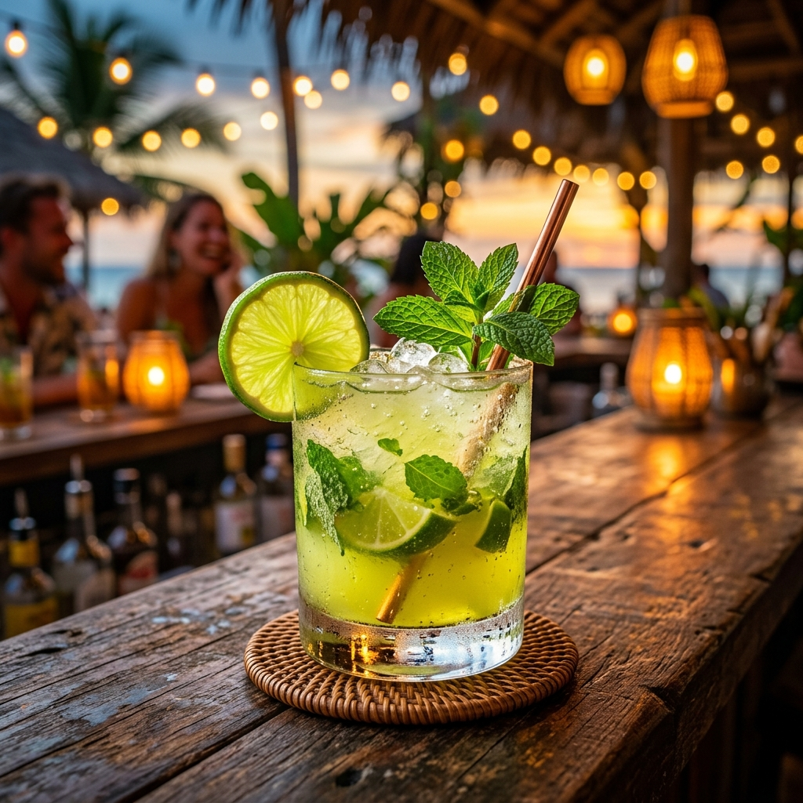

Băuturi premium la evenimentul tău
Suntem un bar mobil echipat complet, gata să aducă vibe-ul de vacanță direct la petrecerea ta. Indiferent că e nuntă, botez sau party corporate, echipa noastră de barmani profesioniști se ocupă de tot.
Cocktail-uri Semnătură Populare
Iată câteva dintre cele mai iubite preparate de la barul nostru mobil:

Mojito Clasic
Rom alb, mentă proaspătă, suc de lime, zahăr brun și apă carbogazoasă. O explozie de prospețime tropicală.
Cel mai vândutAperol Spritz
Aperol, prosecco, apă minerală și o felie proaspătă de portocală. Gustul inconfundabil al verii italiene.
PopularExotic Summer (Mocktail)
Piure de mango, suc de maracuja, sirop de cocos și suc proaspăt de lămâie. Răsfăț tropical non-alcoolic.
Fără AlcoolDe ce să ne alegi pe noi?
- Ingrediente Proaspete: Suntem obsedați de calitate. Folosim doar fructe proaspete, ierburi aromatice cumpărate în ziua evenimentului și siropuri artizanale pentru ca fiecare cocktail să fie o explozie de prospețime.
- Mobilitate: Fie că îți dorești cocktailuri clasice, semnături exotice sau băuturi non-alcoolice (mocktails) revigorante, creăm împreună un meniu adaptat tematicii evenimentului și preferințelor invitaților tăi.
- Design Unic: Barul nostru mobil impresionează prin estetica sa deosebită. Am combinat dotările de ultimă generație ale unui bar modern cu un design vintage rafinat, creând fundalul perfect pentru fotografiile de eveniment.
Ești gata să ridici paharul?
Contactează-ne pentru o ofertă personalizată și lasă logistica băuturilor în grija profesioniștilor!